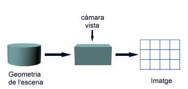

Parteixen de la geometria de l'escena i d'acord amb la posició de l'observador calculen la cara visible en cada píxel de la vista. S'anomenen algorismes d'espai imatge precisament perquè determinen la visibilitat per cada píxel que constituirà la imatge final. En la figura sensible següent mostrem el diagrama funcional d'un algorisme genèric i il·lustrem el seu funcionament amb un exemple concret.
|  |
Els diferents algorismes existents es diferencien pel procediment de càlcul de la visibilitat. Pot realitzar-se píxel a píxel (algorisme de ray-casting), conjuntament per als píxels de cada línia d'escombrat (algorismes d'scan-line), o incrementalment per a cada píxel de la vista mentre es processen les diferents cares de l'escena (algorisme de depth-buffer o z-buffer). Per qualsevol de les tècniques utilitzades, posteriorment al còmput de la visibilitat, cal determinar el color del píxel, el que requereix conèixer el punt concret de la cara que és visible en ell. Els algorismes d'espai imatge s'utilitzen en dispositius de sortida de tipus raster.
Per a determinar la complexitat d'aquesta família d'algorismes, cal considerar que donada la posició de l'observador i la resolució de la vista, es realitza el còmput de la visibilitat geomètrica tants cops com píxels conté la vista. Es tracta de calcular per a cada píxel quines cares de l'escena s'hi projecten en ell i d'aquestes quina es la més propera a l'observador. Així doncs, la seva complexitat serà O(N*M) on M és el nombre de píxels de la vista i N és el nombre de cares de l'escena.